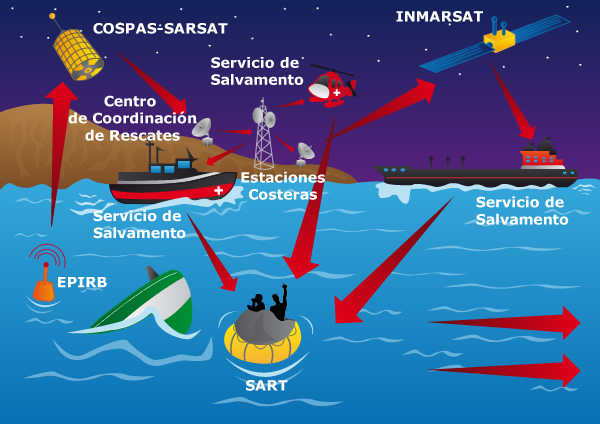

Telecomunicaciones en Colombia

Las Telecomunicaciones en Colombia se encuentran administradas por
la CRC (Comisión de Regulación de Comunicaciones) y
el Mintic (Ministerio de Tecnologías de la Información y las Comunicaciones).
Breve definición de las Telecomunicaciones
Las telecomunicaciones son el campo de la Ingeniería
que permiten disenar mecanismos de comunicacion y
transmisión de información a distancia.
Haz click en el video.
Breve definición de las Telecomunicaciones Las telecomunicaciones son el campo de la Ingeniería que permiten disenar mecanismos de comunicacion y transmisión de información a distancia.
Breve definición de las Telecomunicaciones Las telecomunicaciones son el campo de la Ingeniería que permiten disenar mecanismos de comunicacion y transmisión de información a distancia.
Breve definición de las Telecomunicaciones Las telecomunicaciones son el campo de la Ingeniería que permiten disenar mecanismos de comunicacion y transmisión de información a distancia.
Breve definición de las Telecomunicaciones Las telecomunicaciones son el campo de la Ingeniería que permiten disenar mecanismos de comunicacion y transmisión de información a distancia.
Breve definición de las Telecomunicaciones Las telecomunicaciones son el campo de la Ingeniería que permiten disenar mecanismos de comunicacion y transmisión de información a distancia.
El acercamiento de todos los colombianos a la tecnología es una prioridad máxima